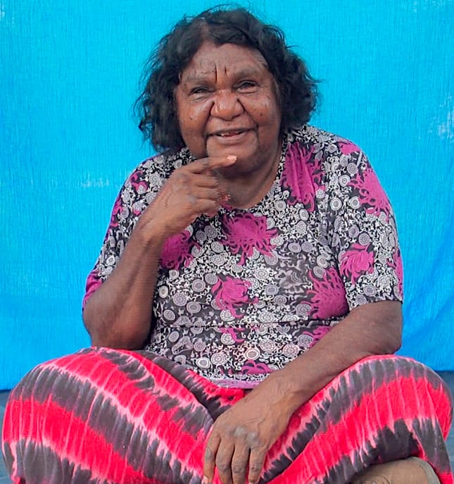
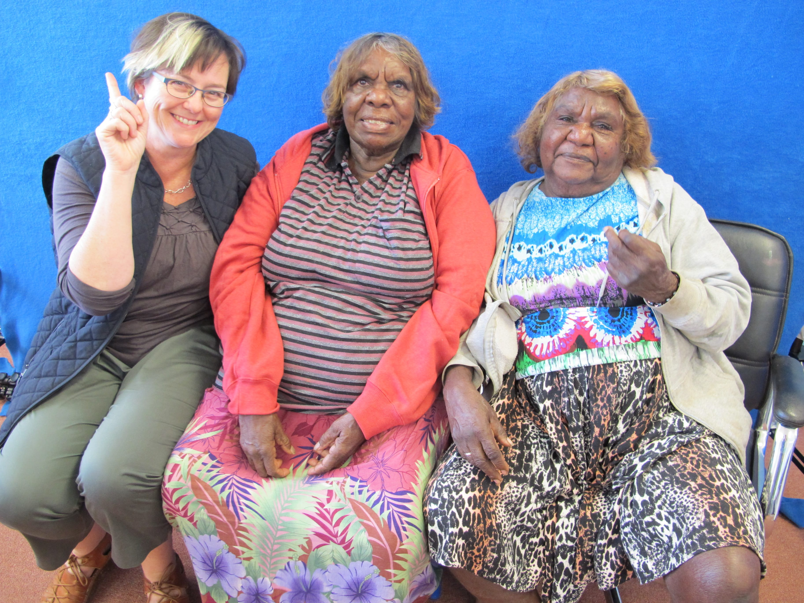
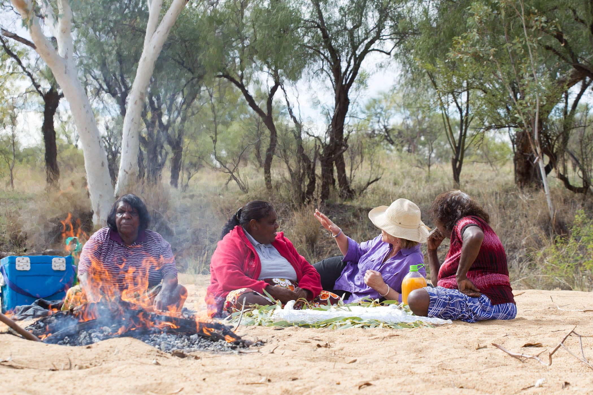

Sign languages
Sign languages are an important and valued part of the traditions of Australian Aboriginal peoples. The sign language website and dictionary called iltyem iltyem, first established in 2011, is now hosted by Batchelor Institute in Alice Springs. This website is for people who are interested in Aboriginal sign languages – and in particular sign languages from Central and Northern Australia. The Anmatyerr word iltyem-iltyem comes from the word iltya ‘hand, finger’ and it is used in to mean ‘signalling with hands, using handsigns’. This website is named iltyem-iltyem because this sign language project began with Anmatyerr people from the community of Ti Tree. April Campbell, Eileen Campbell and Clarrie Long were involved in initial consultations about the website and have contributed their knowledge of Anmatyerr sign to the project. There is general information about Indigenous sign, as well as a dictionary organised in semantic domains.
The dictionary section of the website now has signs from nine language groups and from eight communities.
FILM _ April talking about sign language
FILM AustGeoFilm

April Campbell, Gail Woods, Eileen Campbell, Clarrie Long recording sign in the Hanson River, 2011.
Jennifer Green

Clarrie Kemarr Long shows the sign for angey ‘father’. Ti Tree.
Jennifer Green

Margaret Carew, Eileen Campbell, Clarrie Kemarr Long recording sign, Ti Tree, 2015.
Jennifer Green

Eileen Campbell, April Campbell, Jennifer Green, Clarrie Kemarr Long. Lunchtime in the Hansen River.
David Hancock